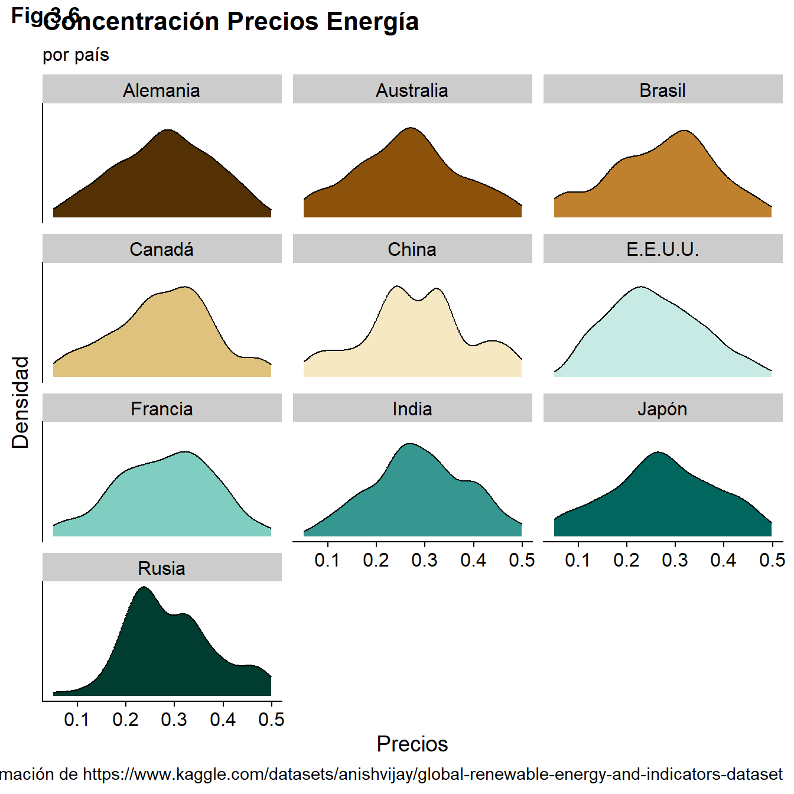
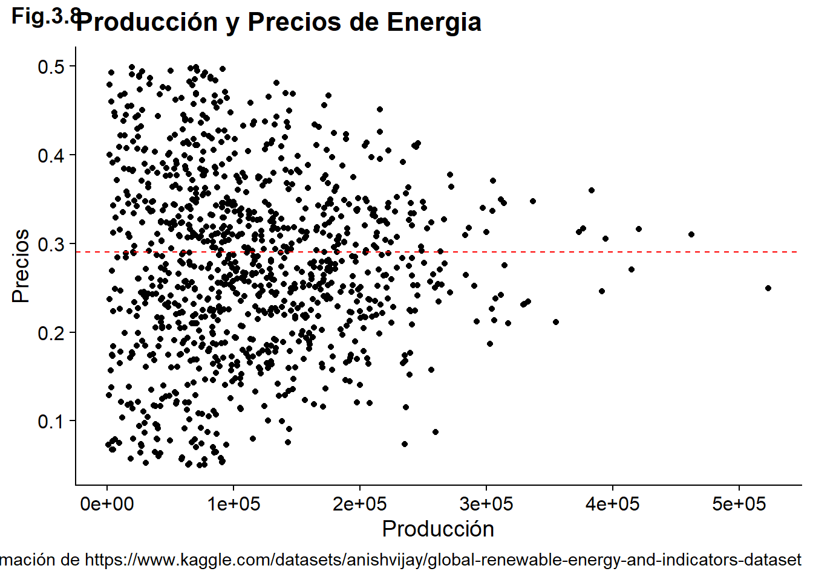
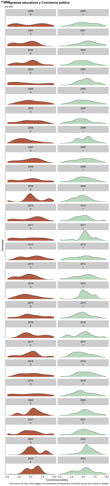
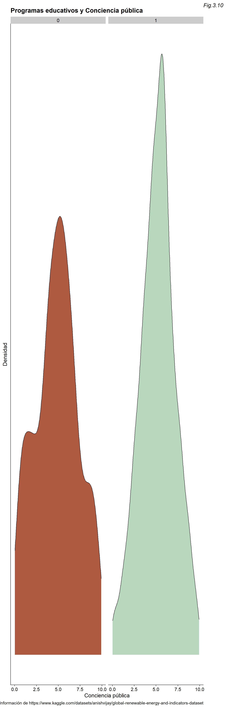
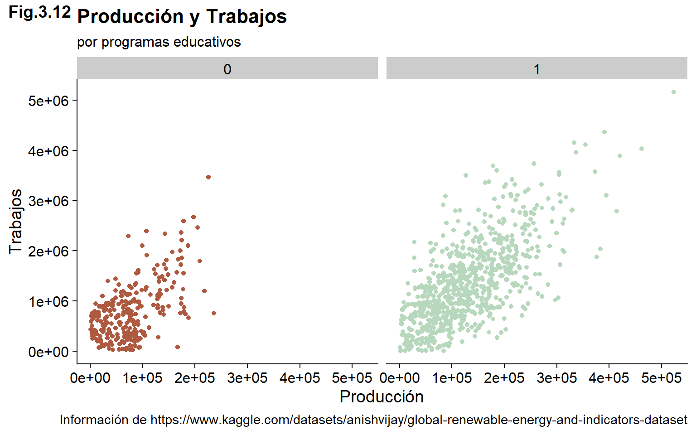
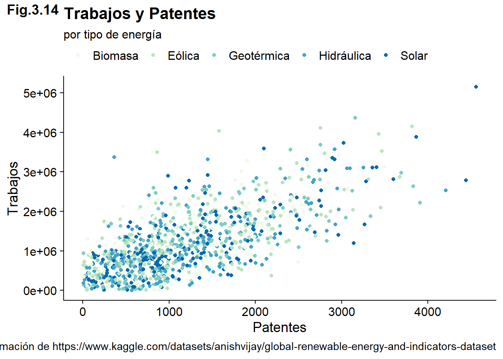

Paola Espinoza Hernández; Gabriel Sanabria Alvarado
3.0.1 Setup
3.1 Planificación
3.1.1 Análisis de modelación
Tomando en consideración las recomendaciones sobre la base de datos, se decidió reordenarla, de acuerdo a las categorías más relevantes a la pregunta de investigación, y anualizar los datos, uniendo las columnas con el mismo país, año y tipo de energía.
Además, con el fin de automatizar la carga de la base de datos, la ruta de acceso parte desde la carpeta con el repositorio, de modo que al clonar el repositorio, este documento por sí mismo, sea capaz de acceder a la base de datos, facilitando el proceso.
Finalmente, se juntan las variables Energy.Imports y Energy.Exports, para lo cual, se pivotea de modo que el flujo de entradas y salidas quede en una sola variable denominada Energy.Flow, que se clasifique en importación o exportación por la variable Energy.Flow.Type.
original <-read.csv("data/complete_renewable_energy_dataset.csv")data <- original|>mutate(Country =case_when( Country =="Brazil"~"Brasil", Country =="Canada"~"Canadá", Country =="France"~"Francia", Country =="Germany"~"Alemania", Country =="Japan"~"Japón", Country =="Russia"~"Rusia", Country =="USA"~"E.E.U.U.", Country =="Australia"~"Australia", Country =="China"~"China", Country =="India"~"India",TRUE~"Other")) %>%mutate(Energy.Type =case_when( Energy.Type =="Solar"~"Solar", Energy.Type =="Biomass"~"Biomasa", Energy.Type =="Wind"~"Eólica", Energy.Type =="Hydro"~"Hidráulica", Energy.Type =="Geothermal"~"Geotérmica", TRUE~"Other")) %>%group_by(Country, Year, Energy.Type) |>summarise(Total.Production =sum(Production..GWh.), Electricity.Prices =mean(Electricity.Prices), R.D.Expenditure =sum(R.D.Expenditure), CO2.Emissions =sum(CO2.Emissions), Investments..USD. =sum(Investments..USD.), Public.Awareness =mean(Public.Awareness), Exportaciones =sum(Energy.Exports), Importaciones =sum(Energy.Imports), Renewable.Energy.Jobs =sum(Renewable.Energy.Jobs), Renewable.Energy.Patents =sum(Renewable.Energy.Patents), Renewable.Energy.Education.Programs =max(Renewable.Energy.Education.Programs), Government.Policies=max(Government.Policies)) %>%pivot_longer(cols =c("Importaciones", "Exportaciones"),names_to ="Energy.Flow.Type",values_to ="Energy.Flow")
`summarise()` has grouped output by 'Country', 'Year'. You can override using
the `.groups` argument.
Nótese que se cambiaron las variables con respecto a la bitácora anterior, con el fin de simplificar el análisis, pero aún así, abarcar diversas áreas, de acuerdo a la pregunta de investigación: social, económica y ambiental.
3.1.1.1 Descripción del modelo
Para determinar relaciones entre algunas de las variables, especialmente la cantidad de trabajos en el sector de energía renovable, se utiliza la función cor(), con el método “pearson”. Esta función retorna un número entre -1 y 1, siendo -1 una relación perfactamente negativa, 1 una perfectamente positiva y 0 ninguna relación; de modo que nos permite saber si las variables analizadas tienen o no nivel de dependencia. Por su lado, el coeficiente de correlación de Pearson mide la fuerza de relación entre dos variables, para lo que suma el producto de sus diferencias con respecto a sus medias, y divide la suma por el producto de las diferencias al cuadrado con respecto a las medias de los objetos, como se muestra a continuación:
Una vez que se obtiene un número bastante más cercano a uno que a cero, se realiza la regresión lineal de ambas variables, que da como resultado el intercepto y el coeficiente beta de la segunda variable. Sea x la primera variable e y la segunda, tenemos: \(x = intercepto + \beta*y\). Por último, para verificar que los datos tienen significancia estadística, para lo que se analiza el p-value. Para comprobar que el modelo es estadísticamente significativo, debemos comprobar que ambos p-values son menores al nivel de significancia predefinido (0.05). Si el valor p es bajo, se puede rechazar la hipótesis nula, es decir, descartar que los coeficientes sean cero, y concluir que existe una relación entre las variables. En ese momento, se procede a realizar el gráfico. A continuación se presenta un ejemplo del procedimiento para las variables relacionadas mediante regresión lineal.
Call:
lm(formula = Renewable.Energy.Jobs ~ Investments..USD., data = data)
Residuals:
Min 1Q Median 3Q Max
-1672217 -396121 -62747 353085 2481110
Coefficients:
Estimate Std. Error t value Pr(>|t|)
(Intercept) 354114.728251491 22921.171428391 15.45 <0.0000000000000002
Investments..USD. 0.000071460 0.000001623 44.02 <0.0000000000000002
(Intercept) ***
Investments..USD. ***
---
Signif. codes: 0 '***' 0.001 '**' 0.01 '*' 0.05 '.' 0.1 ' ' 1
Residual standard error: 576700 on 2098 degrees of freedom
Multiple R-squared: 0.4801, Adjusted R-squared: 0.4799
F-statistic: 1938 on 1 and 2098 DF, p-value: < 0.00000000000000022
3.1.2 Análisis Descriptivo
Dados ya los hallazgos anteriores, resulta interesante analizar el flujo energético de los países. Para ello, la figura 3.1 representa el total de importaciones, comparado al total de exportaciones, por cada país durante el periodo estudiado, 2000 a 2020.
Si bien los gráficos anteriores brindan una idea de cuánta energía se importa o exporta, resulta también interesante ver la relación entre producción y el flujo energético. De acuerdo al modelo utilizado, la producción y el flujo energético puede visualizarse con una regresión lineal:
Call:
lm(formula = Energy.Flow ~ Total.Production, data = data)
Residuals:
Min 1Q Median 3Q Max
-172287 -39894 -4846 32709 298119
Coefficients:
Estimate Std. Error t value Pr(>|t|)
(Intercept) 35701.93012 2255.57656 15.83 <0.0000000000000002 ***
Total.Production 0.72784 0.01625 44.80 <0.0000000000000002 ***
---
Signif. codes: 0 '***' 0.001 '**' 0.01 '*' 0.05 '.' 0.1 ' ' 1
Residual standard error: 56730 on 2098 degrees of freedom
Multiple R-squared: 0.4889, Adjusted R-squared: 0.4887
F-statistic: 2007 on 1 and 2098 DF, p-value: < 0.00000000000000022
Dado que el flujo energético se divide en importaciones y exportaciones, esta división debe estar reflejada en los gráficos.
ggplot(data, aes(x = Total.Production, y = Energy.Flow, color = Energy.Flow.Type))+geom_point()+geom_smooth(method ="lm", color ="black")+facet_wrap(~Energy.Flow.Type)+labs(title ="Relación Produccuión y Flujo Energético",x ="Producción",y ="",caption="Información de https://www.kaggle.com/datasets/anishvijay/global-renewable-energy-and-indicators-dataset",tag ="Fig.3.3")+scale_color_manual(name ="", labels =c("Exportaciones", "Importaciones"), values =c("Importaciones"="#00ba88", "Exportaciones"="#f8966d"))+theme_cowplot()+theme(legend.position ="top",plot.tag.position ="topright",plot.tag =element_text(face ="italic"))
`geom_smooth()` using formula = 'y ~ x'
ggplot(data, aes(x = Total.Production, y = Energy.Flow, color = Energy.Flow.Type))+geom_point()+geom_smooth(method ="lm", color ="black")+facet_wrap(Country~Energy.Flow.Type, ncol =2)+labs(title ="Relación Producción y Flujo Energético",subtitle ="Importaciones y Exportaciones",x ="Producción",y ="",caption="Información de https://www.kaggle.com/datasets/anishvijay/global-renewable-energy-and-indicators-dataset",tag ="Fig.3.4")+scale_color_manual(name="", labels =c("Exportaciones", "Importaciones"), values =c("Importaciones"="#00ba88", "Exportaciones"="#f8966d"))+theme_cowplot()+theme(legend.position ="top",plot.tag.position ="topright",plot.tag =element_text(face ="italic"))
`geom_smooth()` using formula = 'y ~ x'

Los gráficos reflejan que tanto las importaciones como las exportaciones aumentan conforme aumenta la producción.
data %>%ggplot(aes(x = Electricity.Prices))+geom_density()+labs(title ="Concentración Precios Energía",x ="Precios",y ="Densidad",caption="Información de https://www.kaggle.com/datasets/anishvijay/global-renewable-energy-and-indicators-dataset",tag ="Fig.3.5")+ cowplot::theme_minimal_grid()+theme(plot.tag.position ="topright",axis.text.y =element_blank(),axis.ticks.y =element_blank(),plot.tag =element_text(face ="italic"))
data %>%ggplot(aes(x = Electricity.Prices, fill = Country))+geom_density() +facet_wrap(~Country, ncol =3)+scale_fill_brewer(type ="div", palette =1)+labs(title ="Concentración Precios Energía",subtitle ="por país",x ="Precios",y ="Densidad",caption="Información de https://www.kaggle.com/datasets/anishvijay/global-renewable-energy-and-indicators-dataset",tag ="Fig.3.6")+theme_cowplot()+theme(plot.tag.position ="topright",axis.text.y =element_blank(),axis.ticks.y =element_blank(),plot.tag =element_text(face ="italic"),legend.position ="none")

data %>%ggplot(aes(x = Electricity.Prices))+geom_density() +facet_wrap(~Government.Policies)+labs(title ="Concentración Precios Energía",subtitle ="en relación a políticas de gobierno",x ="Precios",y ="Densidad",caption="Información de https://www.kaggle.com/datasets/anishvijay/global-renewable-energy-and-indicators-dataset",tag ="Fig.3.7")+theme_cowplot()+theme(plot.tag.position ="topright",axis.text.y =element_blank(),axis.ticks.y =element_blank(),plot.tag =element_text(face ="italic"),legend.position ="none")

Además, podemos encontrar otras relaciones, que no estén dadas por la regresión lineal, como el siguiente:
ggplot(data, aes(x = Total.Production, y = Electricity.Prices))+geom_point()+geom_hline(yintercept=0.29, linetype="dashed", color ="red")+labs(title ="Producción y Precios de Energia",x ="Producción",y ="Precios",caption="Información de https://www.kaggle.com/datasets/anishvijay/global-renewable-energy-and-indicators-dataset",tag ="Fig.3.8")+theme_cowplot()+theme(plot.tag.position ="topright",plot.tag =element_text(face ="italic"),legend.position ="none")

data %>%ggplot(aes(Public.Awareness, fill =as.logical(Renewable.Energy.Education.Programs)))+geom_density()+facet_wrap(Year~Renewable.Energy.Education.Programs, ncol =2)+scale_fill_manual(name="", labels =c("Con", "Sin"), values =c("TRUE"="#b8d8be", "FALSE"="#ae5a41"))+labs(title ="Programas educativos y Conciencia pública",subtitle ="por año",x ="Conciencia pública",y ="Densidad",caption="Información de https://www.kaggle.com/datasets/anishvijay/global-renewable-energy-and-indicators-dataset",tag ="Fig.3.9")+theme_cowplot()+theme(plot.tag.position ="topright",axis.text.y =element_blank(),axis.ticks.y =element_blank(),plot.tag =element_text(face ="italic"),legend.position ="none")
data %>%ggplot(aes(Public.Awareness, fill =as.logical(Renewable.Energy.Education.Programs)))+geom_density()+facet_wrap(~Renewable.Energy.Education.Programs, ncol =2)+scale_fill_manual(name="", labels =c("Con", "Sin"), values =c("TRUE"="#b8d8be", "FALSE"="#ae5a41"))+labs(title ="Programas educativos y Conciencia pública",x ="Conciencia pública",y ="Densidad",caption="Información de https://www.kaggle.com/datasets/anishvijay/global-renewable-energy-and-indicators-dataset",tag ="Fig.3.10")+theme_cowplot()+theme(plot.tag.position ="topright",axis.text.y =element_blank(),axis.ticks.y =element_blank(),plot.tag =element_text(face ="italic"),legend.position ="none")

En cuanto a los trabajos, estos resaltan como un factor social importante, pues el aumento en empleos, puede ayudar a disminuir el desempleo, lo que mejoraría la calidad de vida de los habitantes del país. Para analizar esta variable, se utilizó la regresión lineal, de acuerdo a la metodología explicada anteriormente.
Call:
lm(formula = Renewable.Energy.Jobs ~ Total.Production, data = data)
Residuals:
Min 1Q Median 3Q Max
-1521466 -393778 -27825 340401 2224482
Coefficients:
Estimate Std. Error t value Pr(>|t|)
(Intercept) 3.359e+05 2.248e+04 14.94 <2e-16 ***
Total.Production 7.423e+00 1.619e-01 45.84 <2e-16 ***
---
Signif. codes: 0 '***' 0.001 '**' 0.01 '*' 0.05 '.' 0.1 ' ' 1
Residual standard error: 565300 on 2098 degrees of freedom
Multiple R-squared: 0.5004, Adjusted R-squared: 0.5002
F-statistic: 2102 on 1 and 2098 DF, p-value: < 2.2e-16
ggplot(data, aes(x = Total.Production, y = Renewable.Energy.Jobs))+geom_smooth(method ="lm")+labs(title ="Producción y Trabajos",x ="Producción",y ="Trabajos",caption="Información de https://www.kaggle.com/datasets/anishvijay/global-renewable-energy-and-indicators-dataset",tag ="Fig.3.11")+theme_cowplot()+theme(legend.position ="top",plot.tag.position ="topright",plot.tag =element_text(face ="italic"))
`geom_smooth()` using formula = 'y ~ x'

ggplot(data, aes(x = Total.Production, y = Renewable.Energy.Jobs))+geom_point(aes(color =as.logical(Renewable.Energy.Education.Programs)))+geom_smooth(method ="lm", color ="black", se =FALSE)+scale_color_manual(name="", labels =c("Con", "Sin"), values =c("TRUE"="#b8d8be", "FALSE"="#ae5a41"))+labs(title ="Producción y Trabajos",subtitle="por programas educativos",x ="Producción",y ="Trabajos",caption="Información de https://www.kaggle.com/datasets/anishvijay/global-renewable-energy-and-indicators-dataset",tag ="Fig.3.12")+facet_wrap(~Renewable.Energy.Education.Programs)+theme_cowplot()+theme(legend.position ="none",plot.tag.position ="topright",plot.tag =element_text(face ="italic"))
`geom_smooth()` using formula = 'y ~ x'
data %>%ggplot(aes(x = Year, y = Renewable.Energy.Jobs, group = Year, fill =as.logical(Renewable.Energy.Education.Programs)))+geom_boxplot(width = .25)+facet_wrap(~Renewable.Energy.Education.Programs, ncol=2)+scale_fill_manual(name="", labels =c("Con", "Sin"), values =c("TRUE"="#b8d8be", "FALSE"="#ae5a41"))+labs(title ="Trabajos en Sector de Energía Renovable",subtitle ="por Programas Educativos",x ="Año",y ="Trabajos",caption="Información de https://www.kaggle.com/datasets/anishvijay/global-renewable-energy-and-indicators-dataset",tag ="Fig.3.13")+theme_cowplot()+theme(legend.position ="none",plot.tag.position ="topright",plot.tag =element_text(face ="italic"))
Call:
lm(formula = Renewable.Energy.Jobs ~ R.D.Expenditure, data = data)
Residuals:
Min 1Q Median 3Q Max
-1802627 -390250 -26921 325687 2477731
Coefficients:
Estimate Std. Error t value Pr(>|t|)
(Intercept) 3.199e+05 2.308e+04 13.86 <2e-16 ***
R.D.Expenditure 7.364e-05 1.632e-06 45.13 <2e-16 ***
---
Signif. codes: 0 '***' 0.001 '**' 0.01 '*' 0.05 '.' 0.1 ' ' 1
Residual standard error: 569800 on 2098 degrees of freedom
Multiple R-squared: 0.4926, Adjusted R-squared: 0.4924
F-statistic: 2037 on 1 and 2098 DF, p-value: < 2.2e-16
ggplot(data, aes(x = R.D.Expenditure, y = Renewable.Energy.Jobs))+geom_point(aes(color =as.factor(Government.Policies)))+geom_smooth(method ="lm", color ="black", se =FALSE)+facet_wrap(~Government.Policies)+labs(title ="Trabajos y Gasto en Investigación",subtitle ="Efecto de políticas de gobierno",color ="",x ="Gasto en Investigación",y ="Trabajos",caption="Información de https://www.kaggle.com/datasets/anishvijay/global-renewable-energy-and-indicators-dataset",tag ="Fig.3.15")+theme_cowplot()+theme(legend.position ="none",plot.tag.position ="topright",plot.tag =element_text(face ="italic"))
Call:
lm(formula = Renewable.Energy.Jobs ~ Investments..USD., data = data)
Residuals:
Min 1Q Median 3Q Max
-1672217 -396121 -62747 353085 2481110
Coefficients:
Estimate Std. Error t value Pr(>|t|)
(Intercept) 3.541e+05 2.292e+04 15.45 <2e-16 ***
Investments..USD. 7.146e-05 1.623e-06 44.02 <2e-16 ***
---
Signif. codes: 0 '***' 0.001 '**' 0.01 '*' 0.05 '.' 0.1 ' ' 1
Residual standard error: 576700 on 2098 degrees of freedom
Multiple R-squared: 0.4801, Adjusted R-squared: 0.4799
F-statistic: 1938 on 1 and 2098 DF, p-value: < 2.2e-16
ggplot(data, aes(x = Investments..USD., y = Renewable.Energy.Jobs))+geom_point(aes(color =as.factor(Government.Policies)))+geom_smooth(method ="lm", color ="black", se =FALSE)+facet_wrap(~Government.Policies)+labs(title ="Trabajos e Inversión",subtitle ="por políticas de gobierno",x ="Inversión",y ="Trabajos",caption="Información de https://www.kaggle.com/datasets/anishvijay/global-renewable-energy-and-indicators-dataset",tag ="Fig.3.16")+theme_cowplot()+theme(legend.position ="none",plot.tag.position ="topright",plot.tag =element_text(face ="italic"))
Call:
lm(formula = R.D.Expenditure ~ Investments..USD., data = data)
Residuals:
Min 1Q Median 3Q Max
-16630916039 -3838823261 -514252821 3315647829 20813825300
Coefficients:
Estimate Std. Error t value Pr(>|t|)
(Intercept) 4025018548.82689 222082411.55004 18.12 <0.0000000000000002
Investments..USD. 0.66870 0.01573 42.51 <0.0000000000000002
(Intercept) ***
Investments..USD. ***
---
Signif. codes: 0 '***' 0.001 '**' 0.01 '*' 0.05 '.' 0.1 ' ' 1
Residual standard error: 5588000000 on 2098 degrees of freedom
Multiple R-squared: 0.4628, Adjusted R-squared: 0.4625
F-statistic: 1807 on 1 and 2098 DF, p-value: < 0.00000000000000022
p <-ggplot(data, aes(x = R.D.Expenditure, y = Investments..USD.))+geom_point(aes(color =as.factor(Government.Policies)))+geom_smooth(method ="lm")+theme(legend.position ="bottom")+labs(title ="Gasto en Investigación e Inversión",subtitle ="Efecto de políticas de gobierno",color ="",x ="Gasto en Investigación",y ="Inversión",caption="Información de https://www.kaggle.com/datasets/anishvijay/global-renewable-energy-and-indicators-dataset",tag ="Fig.3.17")+theme_cowplot()+theme(legend.position ="bottom",plot.tag.position ="top",plot.tag =element_text(face ="italic"))ggMarginal(p, type ="densigram", fill ="purple")
`geom_smooth()` using formula = 'y ~ x'
`geom_smooth()` using formula = 'y ~ x'
`geom_smooth()` using formula = 'y ~ x'
Warning: The dot-dot notation (`..density..`) was deprecated in ggplot2 3.4.0.
ℹ Please use `after_stat(density)` instead.
ℹ The deprecated feature was likely used in the ggExtra package.
Please report the issue at <https://github.com/daattali/ggExtra/issues>.
3.1.3 Justificación modelo seleccionado
Pregunta de investigación: * ¿Qué cambios ambientales y socioeconómicos produce la instauración de la energía renovable en los países?
Al utilizar la función cor(), se obtienen las variables que pueden ser analizadas por medio de la regresión lineal. Posteriormente, se realiza la comprobación del p-value, para asegurar que el análisis tenga significancia estadística.
De esta manera, sabemos que la utilización de la regresión lineal presenta una buena aproximación a los datos, de modo que son una buena representación de estos. En particular, la regresión lineal es utilizada para indicar relaciones positivas o negativas entre las variables.
Entre las ventajas de usar el método de regresión lineal, se encuentra que es fácil de entender e interpretar, puesto que solamente es una línea, mostrando relación positiva o negativa entre las variables analizadas, e indicando la magnitud de la relación por medio de la pendiente. Además, es fácilmente adaptable a diversos datos.
No obstante, la regresión lineal no representa el total de los datos, especialmente los valores extremos. Por ello, para obtener un mejor análisis de los datos, tanto los altamente correlacionados como los que no, es necesario utilizar otros métodos.
Por ejemplo, los gráficos de regresión lineal se complementan de los gráficos de puntos, que permiten ubicar cada dato, y visualizar qué tanto calza la regresión lineal con los datos. En particular, permite dividir los datos en otras categorías, lo que permite realizar la regresión lineal entre estos grupos, de modo que se diferencie la relación entre las variables dependiendo del grupo al que pertenecen estos datos.
Además, se utiliza otro tipo de gráfico para comparar otras variables, especialmente las que no muestran correlación por medio de la función cor(), lo que demuestra las limitaciones del coeficiente de pearson.
Por ejemplo, el gráfico 3.10 utiliza densidades, junto con facetas para separar las observaciones que poseen programas educativos sobre la energía renovable; esta combinación muestra una clara relación entre la conciencia pública y la existencia de programas educativos. Así, se encuentran otras relaciones entre variables, no relacionadas con el coeficiente de pearson.
3.1.4 Fichas de resultados
3.1.4.1 Estabilidad del flujo energético
Nombre de su hallazgo/resultado: Estabilidad de Importaciones y Exportaciones
Resumen en una oración: La cantidad de energía importada y exportada es similar, para cada país durante el periodo.
Principal característica: Cantidad importada y exportada similar.
Problemas o posibles desafíos: Dependiendo de la distribución a lo largo de los años, podría representar mejora o empeoramiento de la independencia energética. La necesidad de energía importada puede deberse a factores ajenos a esta investigación.
Resumen en un párrafo: Al analizar el flujo energético de los países durante todo el periodo, el la figura 3.1, se observa que la diferencia entre las entradas y salidas de energía no es mucha. Las mayores diferencias se presentan en Canadá y Japón. Sin embargo, al visualizar los datos por año, en la figura 3.2, no se observa esta estabilidad, salvo en algunos años. En particular, al enfocarse en los años recientes, se observa una disminución en ambas variables, lo que podría explicarse por el aumento en la producción, así como la tedencia a la independencia energética.
3.1.4.2 Producción y Flujo Energético
Nombre de su hallazgo/resultado: Relación positiva entre producción, importaciones y exportaciones
Resumen en una oración: Conforme aumenta la producción, aumenta tanto la cantidad de energía exportada como importada.
Principal característica: El aumento de la producción energética está relacionado con el aumento en las importaciones.
Problemas o posibles desafíos: El aumento en las importaciones y exportaciones de todos los países responde a factores externos a la investigación. La muestra de países no explica el total de energía producida mundialmente, por lo que parece haber generación espontánea de energía.
Resumen en un párrafo: En la figura 3.3 es posible visualizar el aumento de las importaciones y exportaciones totales conforme aumenta la producción. Esta relación podría ser interpretada como un exceso de energía en algunos países, que lleva a exportaciones, y llega a otros como importaciones. Sin embargo, en la figura 3.4, se observa esta misma relación en cada país analizado. Por ello, se descarta la idea inicial. Además, los gráficos muestran una relación contraria a la relación intuitiva, pues es común pensar que conforme aumenta la producción, disminuyen las importaciones.
3.1.4.3 Concentración de Precios
Nombre de su hallazgo/resultado: Concentración de los precios de la energía
Resumen en una oración: Los precios de energía se concentran en valores cercanos a 0.3.
Principal característica: A nivel general, existe una concentración de precios, que no coincide con la tendencia de los países.
Problemas o posibles desafíos: Pueden existir otras variables que expliquen esta concentración de los precios.
Resumen en un párrafo: La figura 3.5 muestra que existe una concentración de precios en los valores cercanos a 0.3. Sin embargo, al separar los precios por países, en la figura 3.6, esta tendencia no se mantiene en general. Esta diferencia entre la tendencia general y cada país, indica que existen diferencias entre estos, que no están siendo contempladas en los gráficos. Para explicar esta concentración en precios, se utilizan otras variables, como la existencia de políticas de gobierno. La figura 3.7 muestra que la existencia de políticas de gobierno que impulsen la producción de energías renovables, explica muy bien la concentración en precios.
3.1.4.4 Producción y Precios de Energía
Nombre de su hallazgo/resultado: La influencia de la producción en los precios de la energía.
Resumen en una oración: El aumento en la producción parece llevar a la estabilización de precios
Principal característica: A mayor producción, los precios de la electricidad parecen estabilizarse, en valores cercanos a 0.3, valor en el que se concentran los precios de la energía en general.
Problemas o posibles desafíos: La muestra utilizada, podría no ser una muestra tan significativa para concluir la estabilidad de precios mundial.
Resumen en un párrafo: La figura 3.8 muestra que conforme aumenta la producción, los precios tienden a estabilizarse. El valor en el que se estabilizan, resulta un valor interesante, pues es el mismo en el que se concentran los precios, en la figura 3.5. En particular, como muestra la figura 3.7, esta concentración aumenta en los países con políticas de gobierno que impulsen la utilización de energías renovables. Así, la comparación conjunta de los gráficos parece indicar que es posible alcanzar la estabilidad en los precios de la energía por medio de las energías renovables.
3.1.4.5 Conciencia pública y Programas de Educación Energía Renovable
Nombre de su hallazgo/resultado: Los programas de educación sobre energía renovable aumentan la consciencia pública.
Resumen en una oración: Las figuras 3.9 y 3.10 muestran relación positiva entre los programas educativos y la conciencia pública.
Principal característica: Los programas educativos son una buena herramienta para aumentar la conciencia pública.
Problemas o posibles desafíos: Esta relación podría deberse a otros factores no analizados, como la localización geográfica, o la población analizada.
Resumen en un párrafo: Al comparar anualmente la conciencia pública en países con y sin programas educativos sobre la energía renovable, se encuentra una relación positiva entre estas variables. En la figura 3.9, con los gráficos separados por año, se observa mayor concentración en mayores valores de conciencia pública para la clasificación que posee programas educativos sobre el tema. La no existencia de programas educativos muestra la diferencia de información entre la población, pues la mayoría de los gráficos no presentan concentración en valores, sino que la población está informada de manera muy diferenre. Por el contrario, la existencia de programas educativos, brinda información a la población general, de modo que la mayoría de la población se posiciona en valores cercanos. En particular, es posible observar que en el 2022, los programas educativos posicionan a la mayoría de la población en valores mayores a 5; mientras que en los países sin programas educativos, la mayoría se encuentra entre 2.5 y 7.5. Además, esta relación se ve acentuada en el gráfico 3.10, con los valores generales.
3.1.4.6 Producción y Trabajo
Nombre de su hallazgo/resultado: Relación positiva entre producción y trabajos en sector de energía renovable
Resumen en una oración: El aumento en la producción se relaciona con el aumento en la cantidad de trabajos del sector.
Principal característica: La existencia de programas educativos mejora la relación lineal entre producción y cantidad de trabajos.
Problemas o posibles desafíos: La utilización solamente de la regresión lineal puede causar un análisis incompleto. Es posible que algunas variables relavantes para explicar fenómenos estén fuera de las analizadas.
Resumen en un párrafo: A pesar de que existe una correlación lineal entre la producción y la cantidad de trabajos del sector de energías renovables, al incluir la existencia de programas educativos, se observan más características. El gráfico 3.11 muestra una relación positiva entre la producción de energía renovable y la cantidad de trabajos del sector. Sin embargo, con el fin de visualizar otras características, se incluyó la existencia de programas educativos sobre la energía renovable. La figura 3.12 muestra que la correlación lineal es mayor con programas educativos. Adicionalmente, muestra que las mayores producciones energéticas se dan en países con programas educativos, y que son además los de mayor cantidad de empleos en el sector. Esto último se apoya en la figura 3.13, que muestra la relación positiva entre los programas educativos y la cantidad de empleos, tanto para los datos promedio, como para los datos extremos.
3.1.4.7 Trabajos y Patentes
Nombre de su hallazgo/resultado: Relación entre número de patentes y empleos del sector energético
Resumen en una oración: Una mayor cantidad de patentes se relaciona con una mayor cantidad de empleos.
Principal característica: Existe una relación positiva entre la cantidad de patentes y empleos en el sector de energía renovable.
Problemas o posibles desafíos: La relación podría explicarse por variables ajenas al análisis.
Resumen en un párrafo: La figura 3.14 muestra que a mayor cantidad de patentes, mayor cantidad de empleos en el sector. El aumento en la cantidad de patentes implica un aumento en la cantidad de energía que se puede producir, que a su vez implica un mayor número de empresas productoras, o la expansión de las empresas productoras ya existentes. Por ello, resulta intuitivo pensar en esta relación positiva entre las patentes y los empleos. La figura 3.14 muestra que esta idea es correcta, al menos con los datos analizados. Además, resulta interesante ver que esta relación no muestra gran diferencia dependiendo de la energía renovable producida.
3.1.4.8 Gasto en Investigación e Inversión
Nombre de su hallazgo/resultado: Comportamiento similar del gasto en investigación y la inversión
Resumen en una oración: Las políticas de gobierno afectan la cantidad de empleos del sector de energía renovable.
Principal característica: Tanto el gasto en inversión como la inversión reaccionan positivamente a las políticas de gobierno, y se relacionan positivamente con la cantidad de empleos.
Problemas o posibles desafíos: Pueden haber varias variables involucradas en esta relación, que no son analizadas. No está clara la manera en la que se calcula el gasto en investigación y la investigación, por lo que no se sabe si pertenecen a inversión pública, privada o ambas.
Resumen en un párrafo: La figura 3.15 muestra que existe una relación positiva entre el gasto en investigación, y la cantidad de empleos. Además, se muestra que las políticas de gobierno afectan esta relación, pues aumentan ambas variables. La figura 3.16 muestra que existe también una relación positiva entre la inversión y la cantidad de empleos, también potenciada por las políticas de gobierno. La figura 3.17 muestra que el gasto en investigación y la inversión presentan una relación positiva entre ellas; y que, sin embargo, su distribución, mostrada en el margen del gráfico, es distinta.
3.1.5 Ordenamiento de los elementos del reporte
Elementos de Reporte
Primarios
Secundarios
Teoría A: Impacto de las energías renovables en la reducción de emisiones de CO₂ a nivel global.
Teoría B: Descripción de avances tecnológicos en la última década del siglo 20.
Idea A: Las energías renovables podrían reducir las emisiones de CO₂.
Idea B: Relación entre los indicadores de bienestar social y los precios de la electricidad según el país.
Resultado A: Disminución de las emisiones de CO_2 por la instauración de las energías renovables a nivel global.
Resultado B: Aumento de precios de la electricidad en los últimos años.
Teoría C: Análisis del flujo energético como proporción de la producción total.
Resultado D: Energías renovables más utilizadas por cada país.
Idea C: El flujo energético varía dependiendo de la producción total de cada país.
Teoría D: Análisis de la relación entre la densidad de la energía y sus precios.
Valor 6
Valor F
Valor 7
Valor G
Valor 8
Valor H
Valor 9
Valor I
Valor 10
Valor J
Sección
Temas a tratar
Introducción
1. La energía renovable como nuevo principio de autosuficiencia conectada.(secundario) 2. Las energías renovables podrían reducir las emisiones de CO_2. (Primario) 3. La instauración de energías renovables influye directamente en las emisiones de CO2 en 138 países durante el período de 1995 a 2021. (Attanayake) (Primario) 4. Estrategias para la implementación de las energías renovables (Freier & Casola). (Secundario) 5. Impacto de las energías renovables en la reducción de emisiones de CO₂ a nivel global. (Primario) 6. Transición energética y la electrificación sostenible. (Serrano)(Secundario) 7. Energías renovables y la economía en Europa. (Caraballo y García) (Secundario) 8. Variaciones en la cantidad de las distintas energías renovables según el país (secundario) 9. Relación entre los indicadores de bienestar social y los precios de la electricidad según el país (secundario) 10.
Metodología
1. Detalle de los datos: (Primario) 2. Método A (Primario) 3. Método B (Secundario) 4. Diagnóstico del modelo (Primario)
Resultados
1. Aumento en la producción de energías renovables. (Primario) 2. Mayor producción, menos CO2 (Primario) 3. Cambios mínimos en los precios de electricidad. (secundario) 4. Mayor producción, menor fuerza de trabajo. (primario) 5. Disminución de conciencia pública en el 2023. (secundario)
3.2 Parte de escritura
El estudio analiza cómo la instauración de energías renovables influye directamente en las emisiones de CO2 en 138 países durante el período de 1995 a 2021. Donde los países desarrollados, como Estados Unidos, China y la India, tienen la cantidad promedio de emisiones más altas. Lo cual destaca que los países mayormenre responsables de las emisiones de CO2 se han mantenid constantes durante los últimos 25 años, siendo estos, principalmente los países mayor desarrollados. El estudio da uso a técnicas de regresión para valorar las relaciones lineales y no lineales entre las energías renovables y las emisiones de CO₂. El artículo recalca la importancia del cambio a energías limpias para minimizar las emisiones de carbono, pero reconoce que los países en desarrollo enfrentan desafíos significativos en términos de inversión y políticas. Finalmente, aporta recomendaciones para que los países implementen estrategias de transición energética de acuerdo con sus contextos únicos.
Existen estudios que respaldan la información del texto anterior, como lo es “Energía renovable: un nuevo principio de autosuficiencia conectada. Ciudad Y Territorio Estudios Territoriales” de Juan Requejo Liberal, “la generación de energía eléctrica procedente de fuentes fósiles y nucleares es una actividad contaminante, que pone en peligro el planeta, que tiene impacto sobre el medio ambiente local, que tiene riesgos no bien determinados y que generan dependencia y desequilibrios en la economía nacional” (Requejo, 2012, p. 114), el cual confirma el hecho de que la implementación de energías renovables puede ser un gran apoyo para el bienestar social y económico de distintas naciones. Keshani Attanayake concluye que casi todos los países destacan el hecho de que si la energía renovable se incrementa, se lograría reducir la cantidad de emisiones de CO2. El cuál recalca que las economías de desarrollo debería de dar enfásis en la inversión en energías renovables y reducir el uso de combustibles fósiles, y además, destaca que los gobiernos deberían de implementar políticas de energía renovable, con el fin de garantizar un crecimiento económico.
El documento realiza un estudio esencial para el entendimiento de la importancia de la implementación de energías renovables para el bienestar social, económico y ambiental. Destacando como la mayoría de países, a excepción de Canadá, el cual un aumento del 1% en las fuentes de energía renovables da como resultado un incremento de 10,83 millones de toneladas en las emisiones de CO2, afirman que su inversión puede ser beneficiosa para su estabilidad general. Lo cual es muy importante con respecto a otros estudios que se centraban en algún país en específico. Además, la observación la colaboración de distintos gobiernos es vital, ya que reconoce la naturaleza global del cambio climático y la necesidad de soluciones coordinadas. Esta observación conjunta y propositiva fortalece la utilidad práctica del estudio para guiar políticas energéticas hacia un desarrollo más sostenible.
Según Allan Cordero: “El mundo se encuentra en una encrucijada trascendental para el futuro de la energía”. Con el objetivo de reducir el uso de combustibles fósiles y alcanzar la soberanía energética, Costa Rica inició su proceso hacia un modelo de desarrollo autosostenible. La energía hidráulica causa deforestación y obstaculiza el camino de los peces, lo que la descarta como una solución viable a largo plazo. La energía eólica, a pesar de la posibilidad de afectar la calidad de vida de las aves y modificar, aunque muy levemente, la fuerza o dirección del viento, destaca como una opción viable en Costa Rica. Esta energía permite la eliminación de emisiones de gases de efecto invernadero y contribuye a la independencia energética. Por ello, determinar la ubicación de los parques eólicos se ha vuelto una prioridad para las autoridades a cargo.
Esta investigación tiene gran relación con lo propuesto por Laura Casola y Alexander Freier en “La energía renovable como estrategia para combatir el cambio climático en Brasil y Argentina”, pues, mientras Costa Rica prioriza a la energía eólica como una solución viable, Argentina y Brasil examinan sus diversas estrategias en relación con el enfoque de Mercosur, el cual es un bloque económico y político regional en Suramérica, incorporado en 1991 con el Tratado de Asunción. en el cual están dentro países como Argentina, Brasil, Paraguay y Uruguay. Sin embargo, cada conjunto está en busca de un poder energético, cada uno con sus distintos planes. Ambas investigaciones reconocen los impactos ambientales asociados con diferentes fuentes de energía. En el caso del artículo de Cordero, recalca los efectos negativos de la energía hidráulica, como la deforestación y la afectación a los peces, mientras que el documento de Casola y Freier habla de problemas ambientales en Brasil, como la quema de bosques y la deforestación, relacionados con el cambio climático. Ambos hacen un llamado a encontrar alternativas más sostenibles. Ambas investigaciones concluyen que existe cierta urgencia de migrar hacia el uso de energías limpias, a pesar de que esta implementación podría tener impactos negativos en temas de económicos, debido al gran costo de las distintas instalaciones, además del posible daño a la fauna, su implementación logrará beneficiar al bienestar social, ambiental y económico a largo plazo.
Otro estudio relacionado es el realizado por Vega de Kuyper, J.C. y Ramírez Morales, S llamado “Fuentes de energía, renovables y no renovables. Aplicaciones.” El documento se basa en mostrar una visión integral sobre las fuentes de energía renovables y no renovables, explorando su relevancia y aplicaciones en América Latina, especialmente en países como México, Argentina, Chile y Colombia. “Con seguridad el siglo XXI… profundizará en la investigación de la materia, desde lo microcósmico a la astronáutica y avanzando en temas energéticos tales como la fusión nuclear, las energías renovables o el despliegue del hidrógeno como una fuente energética” (Vega de Kuyper & Ramírez Morales, 2014). Con un enfoque pedagógico, los autores proporcionan un equilibrio entre teoría y práctica, explicando los principios de generación y almacenamiento de energía, además de introducir el concepto de eficiencia energética como una herramienta clave para el futuro. Se presentan ejemplos actualizados de proyectos de energías renovables en la región, incluyendo energías como la solar o la geotérmica, así como un análisis de las barreras y oportunidades para su implementación.
Otro apoyo de este análisis es el documento “Wind energy technology and current status: a review” hecho por Thomas Ackermann y Lennart Söder, los cuales destacan los aspectos positivos de la implementacion de la energía eólica en todas las zonas, en especial en zonas ventosas siendo más capaces de generar energía. Ambos estudios subrayan la capacidad de la energía eólica para reducir las emisiones de gases de efecto invernadero. Ackermann y Söder sugieren que la expansión de las energías renovables, incluida la eólica, llevará a una disminución del uso de energías no renovables y reducirá emisiones indirectas. Además, ambos estudios indican que a pesar de que la instalación de ciertas energías renovables puede aumentar el bienestar, puede haber inconvenientes como la contaminación sónica provocada por las turbinas. No obstante, estos inconvenientes pueden ser mitigados con el paso de los años.
El artículo de Abay Analistas Económicos y Sociales estudia la pobreza energética, que se refiere a los hogares incapaces de pagar servicios eléctricos que satisfagan sus necesidades o que destinan una cantidad excesiva a este gasto, es causada por factores como bajos ingresos, pobre acceso a la energía, ineficiencia energética o precios altos. Las consecuencias de esta pobreza abarcan tanto riesgos para la salud física como para la salud mental, además de afectar el futuro de los niños. En España, la pobreza energética va en aumento, lo que resalta la necesidad de soluciones efectivas. Por ello, el desarrollo de energías renovables es crucial, ya que disminuirá el precio promedio de la electricidad al reducir los precios mayoristas, así como los costes de inversión y el desarrollo tecnológico. Por lo tanto, la energía renovable representa un factor importante en la sostenibilidad social y económica, pues el coste marginal nulo de los recursos utilizados se refleja en un menor coste energético y, en consecuencia, en una mayor accesibilidad para la población. Un estudio relacionado es el elaborado por Agencia Internacional de Energías Renovables (IRENA) llamado “Renewable Energy Statistics 2021”, el cual muestra datos específicos importantes para el seguimiento de la inauguración de nuevas políticas e implementaciones de energías renovables. El artículo señala el crecimiento considerable en los años 2018 y 2019, especialmente la energía solar y eólica. Este documento se relaciona con el realizado por Abay pues da una visión realista de como y cuanto se han invertido en energía renovable en los últimos años, mostrando como continentes como Asia, dedicen implementar constantemente de este tipo de energías para un mejoramiento económico y ambiental. Este aumento en la producción también ha elevado la proporción de energía total correspondiente a fuentes renovables.
El artículo realizado por Las Naciones Unidas llamado “¿Qué es la energía renovable?” nos da una explicación sobre las energías renovables e indican que obtienen se obtienen mediante fuentes naturales que se restablece rápidamente. A diferencia de los combustibles fósiles, que liberan grandes cantidades de dióxido de carbono y otros gases de efecto invernadero, las energías renovables son más limpias. No obstante, las fuentes tienen distintas dificultades, tales como la ubicación geográfica de las fuentes de energía e impactos ecológicos de algunas tecnologías, como la hidroeléctrica. Aun así, las energías renovables son más baratas y crean más empleos que los combustibles fósiles, lo que las convierte en una pieza clave para combatir el cambio climático y mejorar la sostenibilidad internacional.
Un estudio que respalda este artículo “Hacia un futuro con energía limpia y renovable” de Javier Serrano, el cual da una descripción de la electrificación y su relevancia en el mundo tecnológico, encabezado por avances como la inteligencia artificial, robótica y computación. Íñigo Segura, director de ZGR, afirma que el reto principal es la maximización del uso de la electricidad mientras se minimiza la dependencia de combustibles fósiles. Las tecnologías como el hidrógeno verde y la fusión nuclear se direccionan como soluciones clave para alcanzar la neutralidad de carbono, aunque aún enfrentan desafíos en cuanto a costos y escalabilidad. También se plantea la necesidad de algunas mejoras en la ciberseguridad en las redes eléctricas por su creciente conectividad y complejidad. La planificación a largo plazo es vital, ya que imprevistos globales pueden desestabilizar la transición energética y la disponibilidad de materias primas estratégicas.
Además de esto, María Ángeles Caraballo Pou y Juana María García Simón en “Energías renovables y desarrollo económico: Un análisis para España y las grandes economías europeas” dan una confirmación de todo lo descrito por Las Naciones unidas. Las cuales estudian los distintos impactos de las energías renovables sobre el desarrollo económico en España y otras economías europeas como Alemania, Francia, Italia y Reino Unido. A través de técnicas de cointegración, los autores estudian la relación entre el crecimiento económico, el uso de energías renovables y no renovables, y la sostenibilidad, comparando los resultados entre los países. Se destaca que el aumento del uso de energías renovables no necesariamente ralentiza el crecimiento económico y puede contribuir a la sostenibilidad a largo plazo.
Con las explicación ofrecida por Las Naciones Unidad, apoyada con la descripción de la electrificación que ofrece Serrano y la comparación de distintas naciones que realizaron Caraballo y García, se puede probar que, mediante una considerable inversión en las distintas energías renovables, se podría reforzar y evaluar la posibilidad de mejoría en el bienestar social, económico y ambiental, siendo estas interdependientes una de la otra, debido a que cada una crea externalidades tanto negativas como positivas. Lo cual también muestra que a pesar de que las energías renovables son vitables para un buen desarrollo a largo plazo, la sociedad está encargada de tomar conciencia y estudiar la importancia sobre este tema, para así evaluar la posibilidad de un cambio radical, así como lo es la minimización de energías no renovables.
La base de datos original posee varios datos de un mismo país y tipo de energía para un mismo año, lo que dificulta la graficación. Anualizar los datos utilizando el promedio de estos datos, permite una mejor graficación. Estos gráficos permiten relacionar las diversas variables, puesto que los datos siguen un mismo patrón. Sin embargo, este proceso debe hacerse para todas las variables seleccionadas. POr lo tanto, se pretende realizar la anualización de los datos, juntando las observaciones según los tipos de energía de cada país para cada año.
De acuerdo a los datos totales, la producción de energía renovable ha aumentado en los últimos años. Dado que los datos originales incluyen muchos datos sobre un mismo año, se realizó este mismo análisis sobre los datos anualizados. En este segundo análisis, se encontró que el patrón global está formado por ese mismo patrón en casi todos los países, a excepción de Japón. Por ello, se pretende relacionar esta diferencia con alguno de los demás factores. Además, se buscará explicar, mediante alguna otra variable, la razón por la que tanto la producción global como la producción de los países por separado ha aumentado, conjeturando la estabilidad en producción energética.
A partir de los datos originales, es posible determinar que un aumento en producción de energías renovables implica una disminución en las emisiones de CO2. Aunque esto es esperable, pues las energías renovables son energías más limpias que las generadas por otras fuentes, como los combustibles fósiles; tanto Japón como Francia presentan una relación directa entre las variables, es decir, un aumento en la producción implica un aumento en la emisión de CO2. De estos dos países, destaca que Japón ha reducido la producción de energías renovables en los últimos años, incumpliendo también el patrón global. Se pretende determinar algún factor que explique la tendencia inversa de estos dos países con respecto a la producción y la emisión de CO2.
Tanto en los datos originales como en los anualizados, es posible determinar que para los últimos años, los precios de la electricidad están aumentando. Sin embargo, el cambio en los precios no es realmete significativo. La pequeña magnitud de los cambios en precio, permiten conjeturar, que los precios se mantienen casi constantes. Se pretende encontrar una variable contextual a nivel global, que justifique la estabilización de los precios. Para esto último, es necesario promediar los precios de todos los países, pues como la variable representa un precio, no se deben sumar los valores.
La fuerza de trabajo en el sector energético es mucho más volátil que la producción. En los últimos años, la producción de energía con fuentes renovables ha aumentado; sin embargo, la fuerza laboral no sigue el mismo patrón. La fuerza laboral de los últimos años ha sufrido muchas variaciones, no leves. La diferencia de crecimiento en la producción y la fuerza laboral plantea una interrogante sobre la capacidad a futuro de producción energética. Se pretende determinar si la inversión o el gasto en investigación y desarrollo se relacionan con la volatilidad de la fuerza laboral del sector energético.
La distribución de la conciencia pública ha sido bastante variable entre los años analizados. Comparando el 2023 con los dos años anteriores, el 2023 tiene mayor distribución en algunas áreas, específicamente las bajas. Al comparar el 2020 con el 2023, la conciencia pública es menor, pues las concentraciones de distribución se encuentran en valores más bajos. En otros años, como el 2009, la conciencia pública estaba mejor repartida entre los países, pero eso no significa que sea mejor, pues en realidad el escenario ideal es la concentración en los valores altos. Se pretende comparar los datos de la conciencia pública con respecto a la existencia o no de programas educativos sobre la energía renovable, así como la proporción de energía consumida que procede de fuentes renovables.
3.3 Parte de reflexión
Con el fin de delimitar la pregunta de investigación de modo que coincida con los datos analizados en este proyecto, se plantea como pregunta de investigación: ¿Qué cambios ambientales y socioeconómicos produce la instauración de la energía renovable en los países?
Para responder a esta pregunta, se analizan variables relacionadas a la educación de los habitantes de los países analizados: Australia, Brasil, Canadá, China, Francia, Alemania, India, Japón, Rusia y Estados Unidos; como la existencia o no de programas educativos sobre energía renovable, y el nivel de conciencia pública.
Se retiraron de variables analizadas, tanto en la bitácora 2 como en la bitácora 3, el gdp (PIB nominal) y la población, dado que no aportan datos suficientemente relevantes a la investigación. Además, considerando la naturaleza de las variables, se optó por aplicar métodos distintos que se ajusten a los valores que estas deben tomar, por ejemplo, para anualizar la producción, se suman los datos contenidos en cada observación en vez de promediarlos; pero para los precios de la electricidad, los valores sí se promedian.
Tomando en cuenta las observaciones realizadas a las bitácoras pasadas, se incorpora un caption con la fuente de la base de datos en cada gráfico. También se incorporan tags, para facilitar la identificación de los gráficos.